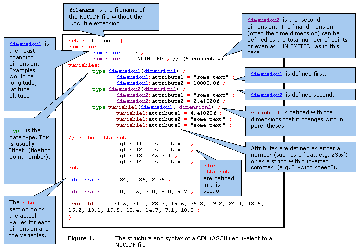

This is intended as a brief introduction to the Climate and Forecast (CF) Metadata Convention as it is used in datasets at BADC.
In addition to the basic data in a netCDF file, the creator of the dataset needs to include information about the data themselves (e.g. type, units), and the creator may want to include information about how the data were collected, and/or warn future users of pitfalls; these items of information are metadata. Several groups have defined conventions for netCDF files, to enable the exchange of data. Since future cataloguing and searching systems will rely on standards in metadata, the BADC has decided to adopt the NetCDF Climate and Forecast (CF) Metadata Convention. The Unidata website gives more information about other possible conventions for NetCDF files (and also about the CF Convention). The conventions define metadata which provide a description of what the data in each variable represents. This enables the users of data from different sources to decide which quantities are comparable. The BADC receives data from many sources, for example station data, satellite data, model data, and we aim to describe all netCDF datasets with the CF conventions.
Whereas netCDF is a binary file format used to order and store data and metadata, with strict rules (so that software will fail to read your files unless the data are correctly structured), the CF conventions are guidelines and recommendations as to where to put metadata within a netCDF file. The CF conventions also advise on what type of information you may want to include.
Variables should (ideally) have associated with them a name, units, possibly information about the direction of increasing value (e.g. degrees_east). The CF conventions have a list of standard_name names for variables. These are held in the most recent version of the CF Standard Name Table. The list includes the units recommended for each standard name (most common prefixes can be used with the units, e.g. kilo (k), hecto (h), Mega (M), etc). Some parameters do not have a standard name defined. Whether the variable has a standard name or not, CF conventions recommend that a long_name be used to describe the variable more fully (and perhaps provide a handy graph-axis label).
The guidelines given here are not exhaustive, and some sections of the CF conventions are not covered. Please consult the CF web pages for further information.
Figure 1 shows the structure of a netCDF file. The file has several basic components: dimensions, variables, data, and global attributes.

Dimensions can be spatial, temporal, or any other quantity (even an index). Typical dimensions for gridded model data are latitude, longitude and altitude, typical dimensions for radar data are range and time. The dimensions can contain regularly or irregularly spaced steps, and there is no limit on the number of dimensions (even 'UNLIMITED' is allowed for one dimension). The 'unlimited' dimension occurs when the dimension is, for example, 'time' and data are still being taken. Dimensions are also defined for each of the variables.
The variables section contains information on the actual variables as well as on each dimension. The variables can include scalar quantities with only a single value, for example radar frequency. The variables should be named using the CF Standard Names where possible, otherwise 'long_name' should be used to describe the variable.
It is often very useful to include a dummy value for missing data in the file. The CF conventions suggest that the '_FillValue' attribute be used, and defined as the same type of variable as the one it replaces.
If the dataset is stored with reference values to a given constant and/or multiplier, the 'scale_factor' and 'add_offset' attributes should be used.
These relate to the dataset at the more general level. They might include such information as instrument name and description, institution name, processing history, references. One aspect of the CF conventions is that extra attributes are not outlawed, so you can include further information in the global attributes, if you think it would be useful for future users. The BADC recommends you include as much information as possible.
CF conventions make one global attribute mandatory:
Conventions "CF-1.0"
CF conventions recommend the following global attributes:
| title | A succinct description of what is in the dataset. | |
| institution | Specifies where the original data were produced. | |
| source | The method of production of the original data. If the data are model generated, source should name the model and the version number. If the data are observational, source should characterize them, e.g. surface observation, radiosonde, satellite. | |
| history | Provides an audit trail for modifications to the original data. Well-behaved generic software will automatically append their name, input parameters, and a timestamp. | |
| references | Published or web-based references which describe the data, or the methods used to produce them. | |
| comment | Miscellaneous information about the data or the methods used to produce them. |
We have generated some examples of the types of information that could be put into the global attributes for three datasets.
The BADC also runs a web-based CF-checker that allows you to upload a file to test for compliance with the CF Convention. Visit the CF-checker page to use this service.